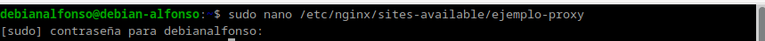
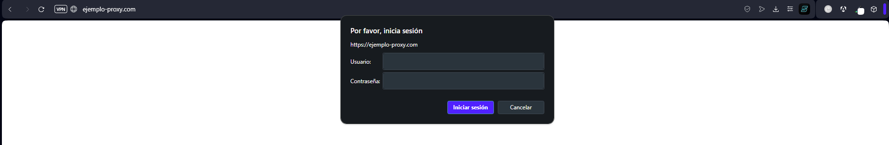
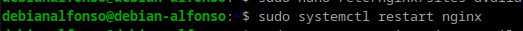

Práctica 2.3.- Proxy inverso con Nginx
1. Configuración Nginx
1.1.- Servidor web
El primer paso para la realización de esta práctica es clonar la máquina Debian en la que tenemos instalado nuestro servidor de Nginx.
- Un servidor servirá los sitios webs que ya hemos configurado anteriormente.
- El nuevo servidor estará configurado como
proxy inverso. - Realizaremos las peticiones HTTP desde nuestra máquina física hacia el proxy clonado, que este nos redigirá hasta el servidor web original.
IMPORTANTE A la hora de clonar la máquina es importante Generar nuevas direcciones MAC, para poder comunicarnos entre las máquinas.
Después de clonar la máquina, la iniciaremos y haremos los siguientes cambios.
-
Cambiar el nombre de nuestra web por
webserver, esto implica estos cambios: -
Cambiar el nombre del archivo de configuración de sitios disponibles en Nginx, para ello usamos
sudo mv /etc/nginx/sites-available/nombre_servidor /etc/nginx/sites-available/webserver. Tras esto, accederemos al fichero de configuración consudo nano /etc/nginx/sites-available/webserverpara seguir realizando cambios. -
Eliminamos el enlace simbólico con el comando
unlink nombre_del_linkdentro de la carpetasites_enabledy creamos el nuevo enlace para el nuevo nombre de archivo consudo ln /etc/nginx/sites-available/webserver /etc/nginx/sites-enabled/.
-
Ahora volvemos a configurar el archivo de configuración y cambiamos el puerto de escucha del
80al8080.
-
Reiniciamos Nginx con
sudo systemctl restart nginx, si no aparece ningún mensaje significa que la configuración esta correcta.
1.2.- Proxy inverso
Iniciamos nuestra otra máquina Debian, es decir, donde configuraremos el proxy.
Para ello creamos un archivo de configuración en sites-available con el nombre ejemplo_proxy con sudo nano /etc/nginx/sites-available/ejemplo_proxy

Y ponemos la siguiente configuración:

- En
listen, ponemos el puerto que queremos escuchar. - En
server_name, ponemos el nombre de nuestro dominio al que queremos acceder en el proxy. - En
proxy_pass, ponemos la dirección IP de la máquina que tiene alojada el servidor y el puerto al que queremos reenviar. - Por último creamos un link simbólico con:
sudo ln /etc/nginx/sites-available/ejemplo-proxy /etc/nginx/sites-enabled/
2.- Comprobaciones
Editamos nuestro fichero hosts para añadir el sitio ejemplo-proxy.com:

Y ahora accedemos a nuestro sitio web mediante ejemplo-proxy.com, donde si todo va bien nos preguntará nuestro usuario y contraseña como en anteriores prácticas:

Y accedemos a la consola mediante la tecla F12, al apartado de red y vemos lo siguiente:

Aquí vemos que la respuesta de la petición es un código 200 OK, también vemos las cabeceras que se incluyen en la petición del método GET y en la respuesta de la petición.
Ahora comprobamos los access.log en los dos servidores:
EJEMPLO_PROXY


WebServer

3.- Añadiendo cabeceras
Además de haber mirado los logs, vamos a demostrar aún de forma más clara que la petición está pasando por el proxy inverso y que está llegando al servidor web y que vuelve por el mismo camino.
Para ello, añadiremos una cabecera en el fichero de configuración del Proxy inverso dentro de location / {...} añadimos esta directiva: add_header Host nombre_del_host, quedaría así:
El siguiente paso será reiniciar nginx: 
Ahora comprobamos que podemos acceder al sitio web sin problemas y buscamos que el proxy inverso ha añadido la cabecera a la respuesta:
Y ahora hacemos el mismo paso en nuestro WebServer. Si todo esta correcto, aparecerán ambas cabeceras.

IMPORTANTE Para realizar estas comprobaciones es imprescindible tener marcado el checkbox de Desactivar caché, ya que si no se marca esta opción la página se guardará en la memoria caché del navegador y no recibiréis la respuesta del servidor.